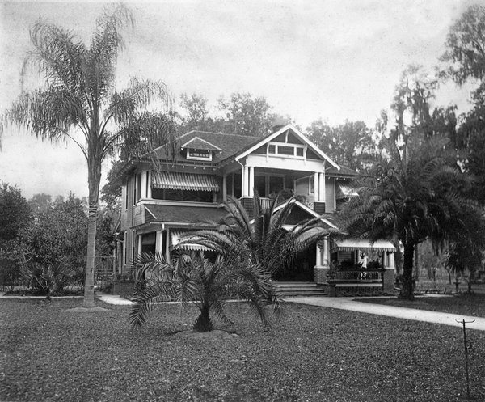

Ulysses A. “Doc” Lightsey: The Fort Meade Cattleman Who Fenced the Kissimmee Range
Ulysses A. “Doc” Lightsey
The Fort Meade Cattleman Who Fenced the Kissimmee Range

Home of Ulysses A. and Helen Lydia Wilson Lightsey, 930 South Oak Avenue, Bartow. The house passed to their daughter Lucile (Mrs. Frank) Alexander after both Ulysses and Helen died in 1928.
Source: State Archives of Florida, Florida Memory. Image No. N028117. floridamemory.com/items/show/137835. Public domain.
“At one time he was known as the ‘cattle king of Polk County.’” — Spessard Stone, Polk County Historical Quarterly, 1990
Ulysses A. Lightsey spent his whole life going by a name that wasn't the one on his birth record. Everyone who knew him called him “Doc” — a nickname none of the surviving sources explain — and by the time he died in 1928, that name belonged to one of Polk County's most consequential cattlemen. Born February 8, 1860, in Dupont, Georgia, he moved with his parents to Fort Meade in 1869, at age nine, as his father Cornelius built the family's first store and, later, its cattle business on the Florida frontier. Cornelius's own story is told in Florida Learning Hub's companion article, The Lightsey Family (FLH-0320).
Fencing the Kissimmee Range
Doc went to work first with his father, then built his own name in partnership with William Henry Lewis, entering the livery, cattle, and citrus trades together for roughly fifteen years before selling the livery business in 1907 (Lewis's own career is told in the companion FLH-0322). Doc's defining venture came when he bought a half-interest in the Lightsey-Parsons Cattle Company, with a ranch on the Kissimmee River. There he initiated the movement toward fenced pastures in the valley — a break from the open range — and posted armed guards to stop free-range cattlemen from cutting his new fence lines. Through that fencing, he developed a cross-breed of cattle that produced a noticeably better grade of beef than the open range typically yielded, earning him the title “cattle king of Polk County” in his own lifetime.
Banker, Assessor, Legislator
Doc's public life ran alongside his ranching career for decades. He chaired the committee that posted the January 1885 election notice that led to Fort Meade's unanimous vote to incorporate, served as Polk County's tax assessor from 1885 to 1887, and won election to the Florida House of Representatives in 1886. After moving to Bartow in 1893, he served on that city's commission, and even in his “retired” years remained a director of the Polk County National Bank and vice-president of the South Florida Cattle Loan Company. He married Helen Lydia Wilson in 1893; they raised two children, Lucille and James Carlisle. Doc and Helen died within months of each other in 1928, closing out a life that traced almost the entire span of Polk County's transformation from open frontier to organized county.
Quick Facts
| QUICK FACTS | |
| Born / Died | Feb. 8, 1860, Dupont, Georgia — May 26, 1928, Bartow, Florida |
| Moved to Florida | 1869, to Fort Meade, age 9 |
| Business partner | William Henry Lewis — livery, cattle, and citrus (see FLH-0322) |
| Signature venture | Half-interest, Lightsey-Parsons Cattle Co., Kissimmee River |
| Public offices | Polk County Tax Assessor; Florida House of Representatives; Bartow City Commissioner |
Did You Know?
- Doc Lightsey posted armed guards along his new fence lines in the 1890s to stop free-range cattlemen from cutting the wire — an early skirmish in Florida's long shift from open range to fenced pasture.
- He chaired the committee that posted the January 1885 election notice that led to Fort Meade's unanimous vote to incorporate as a town.
- Both Doc and his wife Helen died in 1928, only months apart.
Vocabulary
- Open range — unfenced land where cattle grazed freely and were rounded up rather than pastured.
- Cattle king — an informal title given to the most successful large-scale Florida ranchers of the 19th and early 20th centuries.
Discussion Questions
- Doc Lightsey fenced open range that free-range cattlemen had used for generations, and posted armed guards to defend the new fence lines. Whose interests were served by fencing, and whose were hurt by it?
- Doc held public office — tax assessor, state legislator, city commissioner — throughout his ranching career. What does that overlap suggest about how frontier communities like Fort Meade and Bartow actually got built?
Related Articles
- FLH-0320 — The Lightsey Family: Eight Generations of Cattle, Land, and Conservation in Central Florida
- FLH-0322 — W. Henry Lewis: Pioneer Cattleman of Fort Meade and the Kissimmee River
Sources
- Spessard Stone, “Ulysses A. Lightsey,” Polk County Historical Quarterly (June 1990).
- State Archives of Florida, Florida Memory. “Home of Helen Wilson Lightsey and Ulysses A. Lightsey - 930 South Oak Avenue, Bartow.” Image No. N028117. floridamemory.com/items/show/137835. Public domain.
This article was researched from publicly available historical sources, principally a single cited 1990 genealogical profile. Lightly edited for clarity; no content invented.